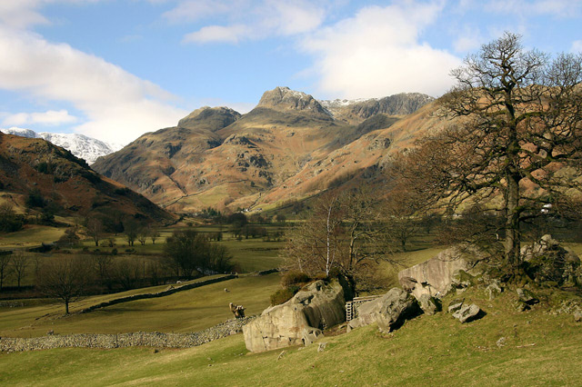
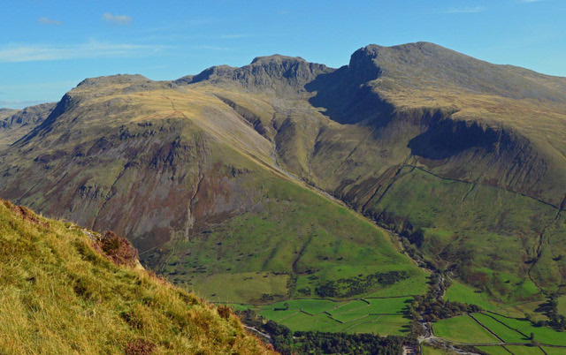

A View of the Valley
Scafell Pike - Highest and most prominent mountain in England
By Doug Sim - Own work, CC BY-SA 4.0, https://commons.wikimedia.org/w/index.php?curid=37827085
By Doug Sim - Own work, CC BY-SA 4.0, https://commons.wikimedia.org/w/index.php?curid=37827085